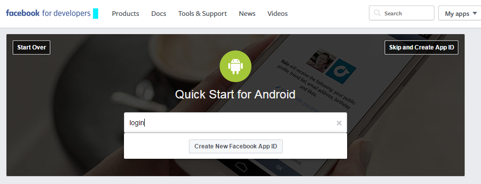
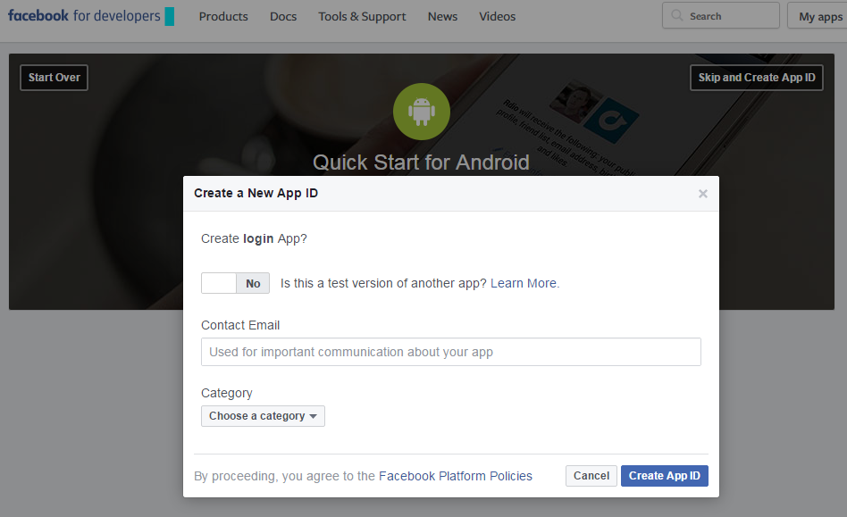
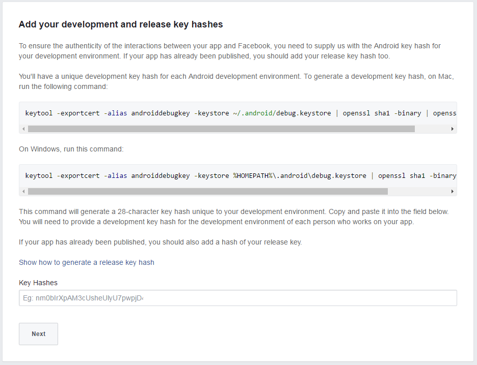
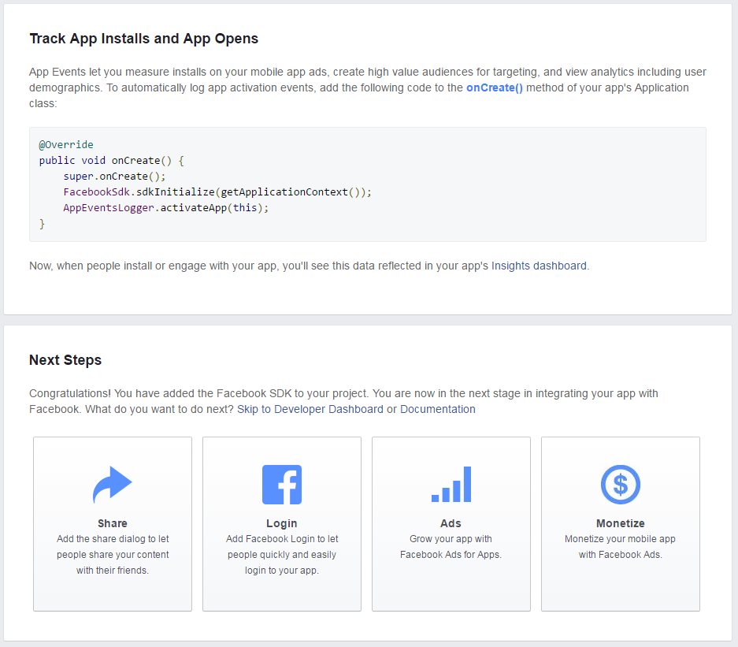

本文重點在於 Key Hash 的取得方式，其他流程僅簡單敘述無實際 code。
建立 Facebook App
進入 facebook for developers Quick Start for Android

輸入所要新增的 ID 建立 App，若是 ID 中有包含 facebook、fb 等關鍵字會無法建立。這個 ID 跟 Android 的 Package name 是沒關係的，沒有要求要一樣。

填一下 Email 以及 App 類別，送出後就會開始一步一步教你如何使用，總共有
- Facebook SDK 引用
- 在 Android 專案中加入你的 Facebook App ID
- 登記 Package Name 和 Default Activity Name
- 登記 key hashes
基本上 1 ~ 3 應該還蠻簡單的，有可能會有問題的是第四個步驟。
取得 Key Hash

照著官方的步驟在命令提示字元輸入
keytool -exportcert -alias androiddebugkey -keystore %HOMEPATH%\.android\debug.keystore | openssl sha1 -binary | openssl base64
有可能會出現找不到 keytool 或是 openssl 的狀況。
兩樣東西都確認有了之後就可以執行下面的指令，cd 到 java/bin 底下接著使用 keytool。目錄位置若有不同記得修改一下。
cd C:\Program Files\Java\jre1.8.0_101\bin
keytool -exportcert -alias androiddebugkey -keystore %HOMEPATH%\.android\debug.keystore | C:\openssl-0.9.8k_X64\bin\openssl sha1 -binary | C:\openssl-0.9.8k_X64\bin\openssl base64
接著會要你輸入 keystore 的密碼，按官方的說法預設是
android
接著就會取得一組長度 28 的 key hash，再把這組字串貼上去送出即可。
但也不要開心的太早，我就是做到後面才發現這個 key hash 似乎有問題。
先來繼續完成 Facebook 的登入按鈕。
在 Android 中加入 Facebook login 按鈕
在送出 key hash 之後會繼續引導你

點選那個 Login 的圖按就會進到登入的教學頁面，也是一樣照著步驟做即可。
- 在
AndroidManifest.xml 中加入 FacebookActivity。
- 在 Layout 中放入 Facebook login button
- 在 Activity 中 Init Facebook SDK
- 在 Activity 中建立 CallbackMagager，以及在 onActivityResult 中呼叫 CallbackMager.onActivityResult
- 替 login button 註冊 callback
也是挺簡單的，就不再多說明了。
無法正常登入登出，原來是 Key Hash 的問題
我的情況是做好之後可以正常登入，在登入後那個登入的按鈕會變成登出的按鈕，於是我就手賤按了登出，要再登入就發現不能登入了，出現這樣的訊息：
There is an error in logging you into this application. Please try again later.
如果手機用中文版的話是
登入錯誤: 登入到應用程式時發生錯誤，請稍後再試。
網上有人說要使用者自己去 Facebook 裡面移除這個登入的 App，就可以再登入了，但若是再次登出並登入又會出現一樣的問題。
後來在 Faceook Login 的 Android Troubleshooting 頁找到一段可以在 Android app runtime 時印出 key hash 的 code，差不多是長這樣：
String packageName = "com.example.fblogin";
try {
PackageInfo info = getPackageManager().getPackageInfo(packageName, PackageManager.GET_SIGNATURES);
for (Signature signature : info.signatures) {
try {
MessageDigest md = MessageDigest.getInstance("SHA");
md.update(signature.toByteArray());
String s = Base64.encodeToString(md.digest(), Base64.DEFAULT);
Log.d("key hash", s);
} catch (NoSuchAlgorithmException e) {
e.printStackTrace();
}
}
} catch (PackageManager.NameNotFoundException e) {
e.printStackTrace();
}
執行下去就會跑出這支 App 的 key hash，貼到剛剛 Facebook App 裡的 Key Hashes 欄位送出，就可以正常的登入啦！
Reference
How can I find and run the keytool